Ložnice
Jednolůžka z masivu
Jednolůžka z buku, dubu i smrku od klasiky po pohovkové postele a postele s úložným prostorem. Rozměr, výšku ložné plochy i dřevinu přizpůsobíme.

Senior postel Pavla dub
Dubová postel pro náročné s vysokou nosností 500kg s povrchovou úpravou olej Osmo.
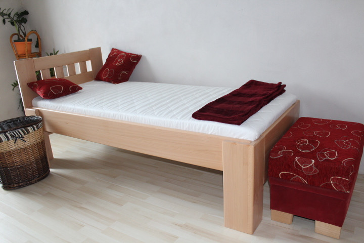
Jednolůžko buk - Luxi
Luxusní jednolůžko, čelo okýnka materiál: masivní buk.
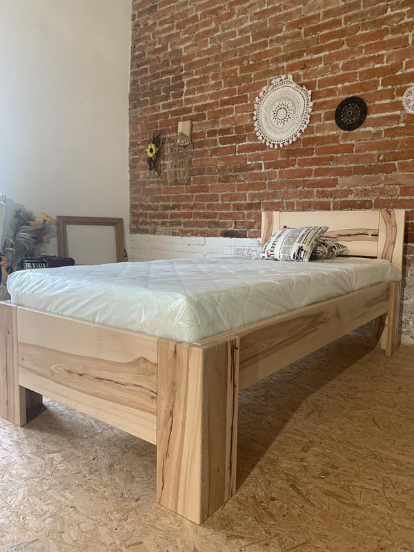
Jednolůžko rustikální Petra
Originální jednolůžko rustikálního vzhledu z jádrového buku.
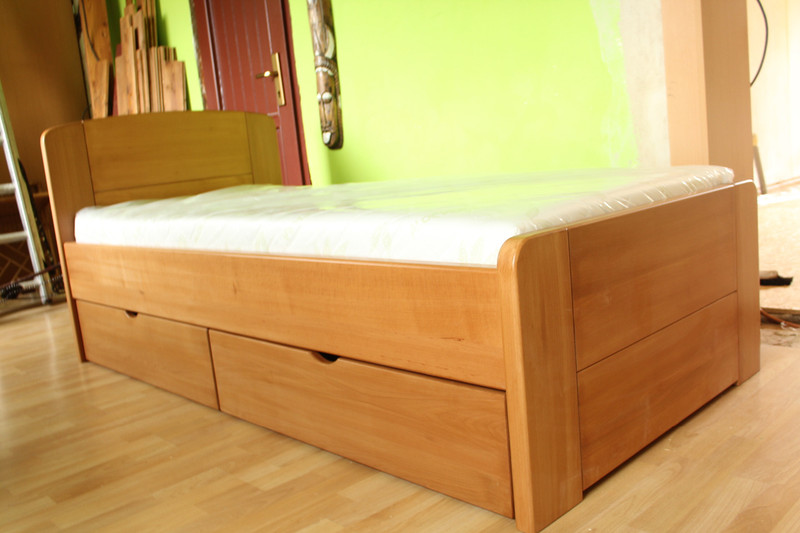
Jednolůžko Beáta vysocezátěžové
Luxusní jednolůžko s plnýmy čely, ze silného materiálu buk přírodní o tl. 42mm včetně bočnic.
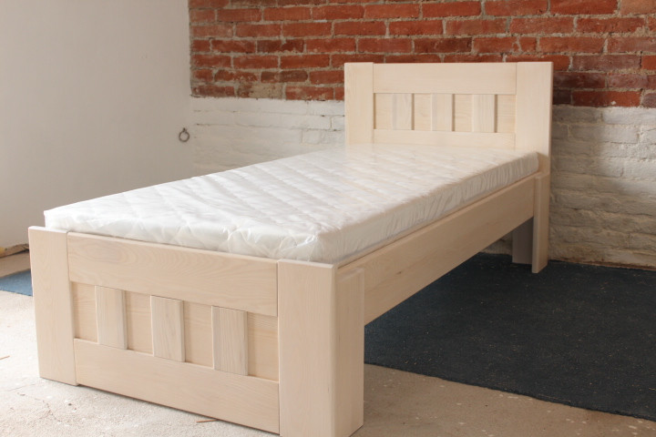
Jednolůžko Merry buk bílý
Luxusní jednolůžko čela s 3D efektem, materiál buk bílý, kazetová čela, rozměry na matraci 90x200cm.
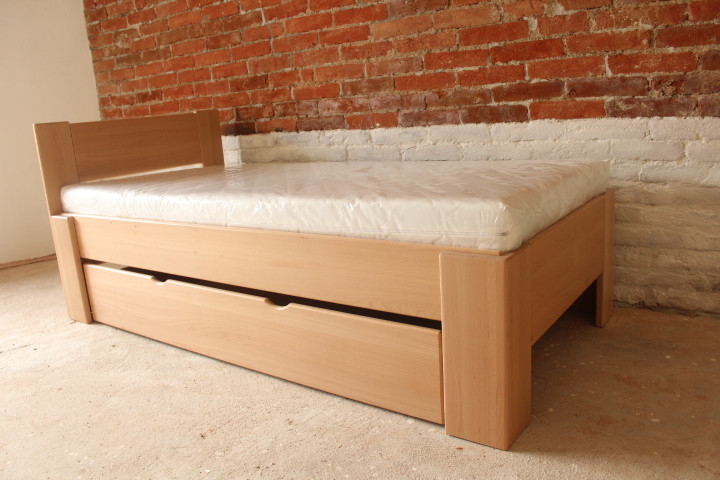
Jednolůžko Petra buk
Bukové jednolůžko s čelem typ Petra.
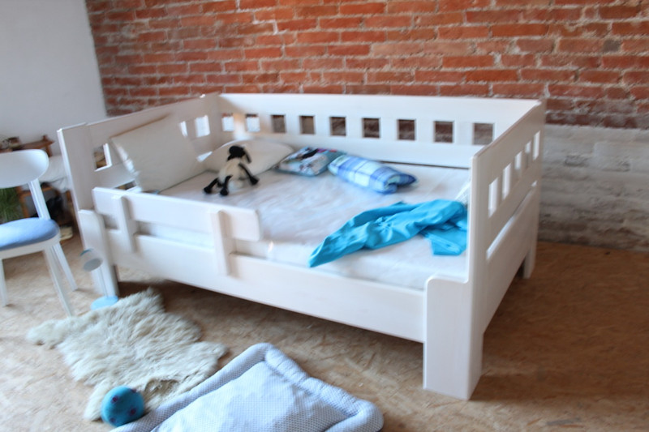
Jednolůžko Luxi Triple
Bukové jednolůžko s okýnkovými čely ze tří stran.
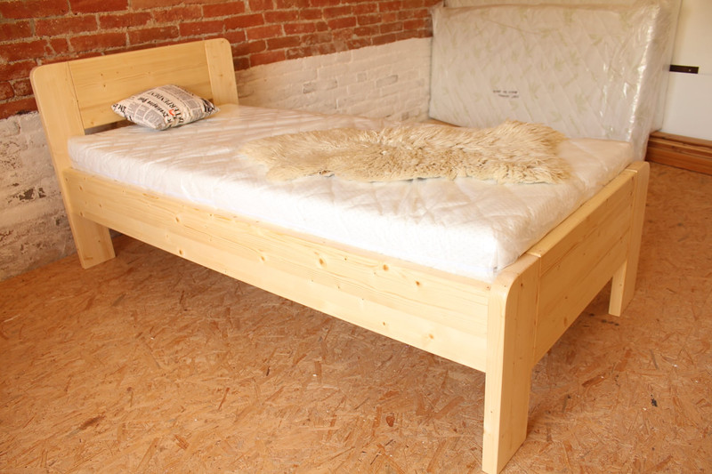
Jednolůžko Lucie- zaoblené rohy
Jednolůžko z masivního smrku nebo borovice s vysokou nosností 400kg, materiál o tl. 40mm.
Zobrazit dalších 17 modelůSkrýt dalších 17
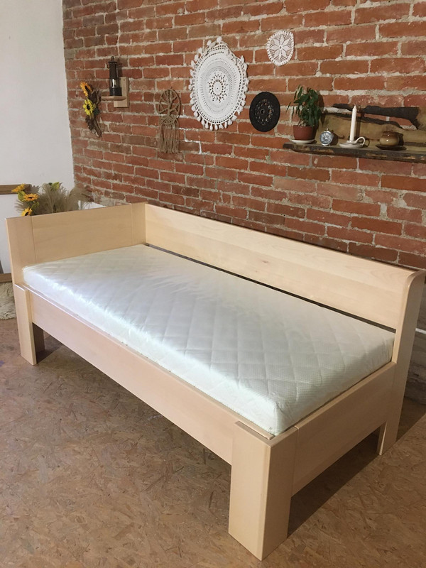
Jednolůžko Petra Plus
Bukové jednolůžko s vysocenosnostní zadní zábranou ke zdi pro plnohodnotné opření.
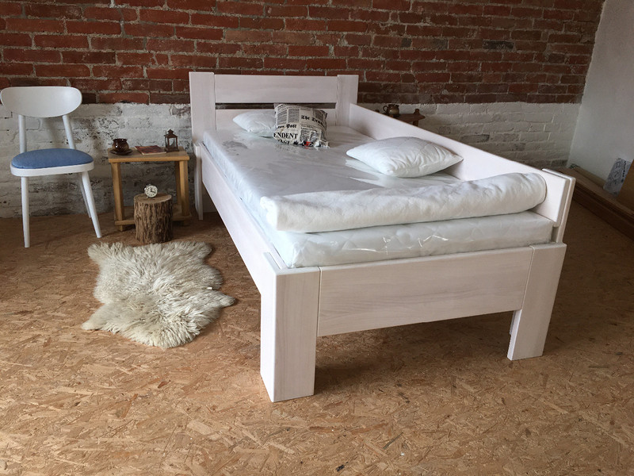
Jednolůžko rozšířené na š.100cm Pavla Plus buk
Bukové rozšířené jednolůžko, rozměry na matraci 100x200cm (v roz. 90x200cm 8 280 Kč).
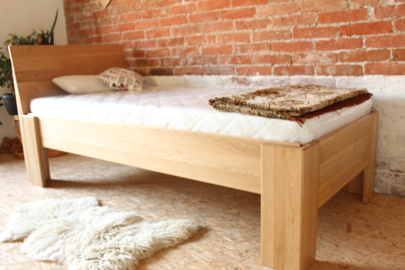
Dubová postel se šikmým čelem Manita
Dubové jednolůžko se šikmým čelem pro lepší komfort při sezení v posteli.
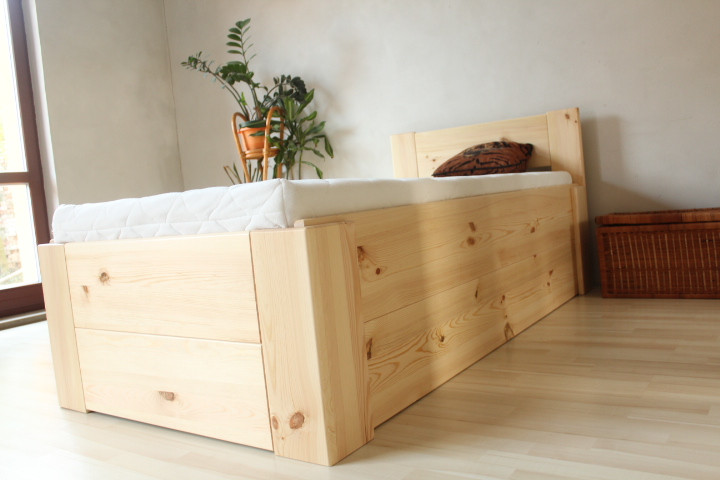
Postel Reny s vestavným úložným prostorem
Jednolůžko z masivního přírodního smrku nebo borovice, rozměry na matraci 90x200cm nebo 80x200cm.
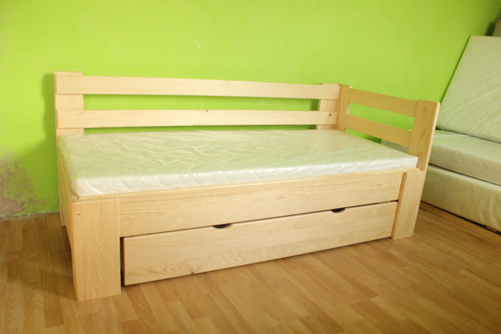
Jednolůžko Lada
Jednolůžko ze smrkového masivu s vysokou zábranou ke zdi.
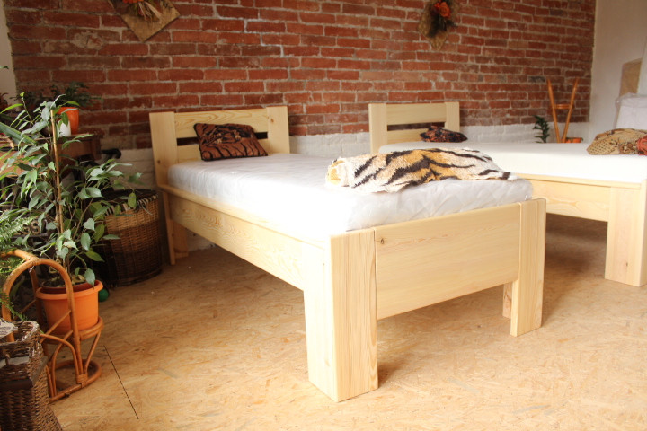
Jednolůžko Pavla
Borovicové nebo smrkové jednolůžko s čelem.
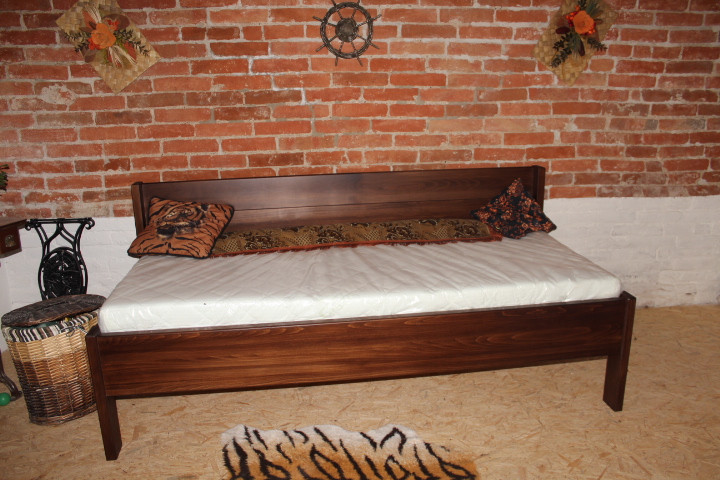
Pohovková postel Hally
Masivní robustní pohovková postel ze silného vysokonosnostního materiálu buk s ložnou plochou 55cm k povrchu matrace.
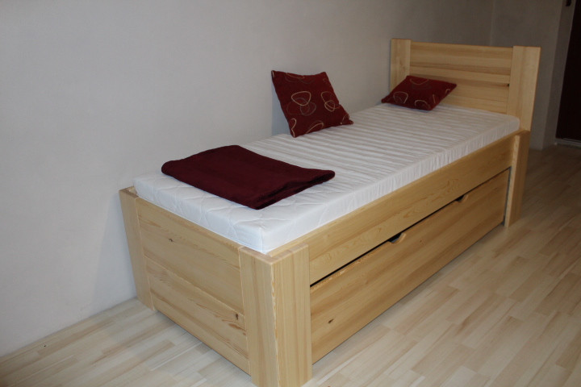
Viktorie M
Nadimenzovaná borovicová (nebo smrková) postel s vyvýšenou ložnou plochou na v. 65cm ( k povrchu matrace).
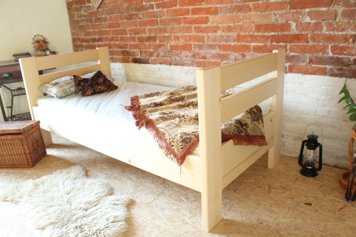
Robustní vysokozátěžové jednolůžko na 400kg EMA
Robustní jednolůžko pro vysoké zatížení ze silného materiálu smrk o tl. 42mm včetně bočnic.
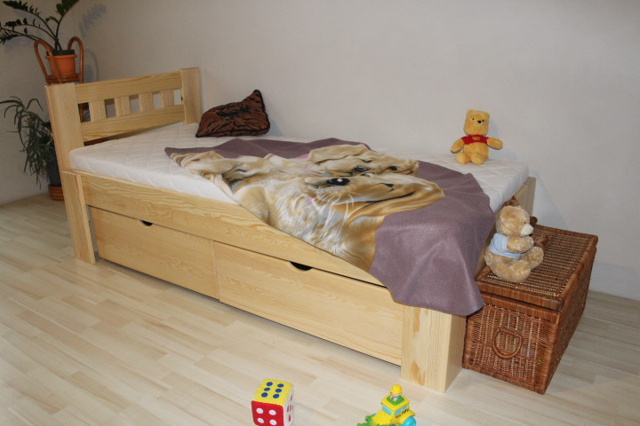
Jednolůžko Luxi borovice
Luxusní borovicové jednolůžko s čely okýnka.
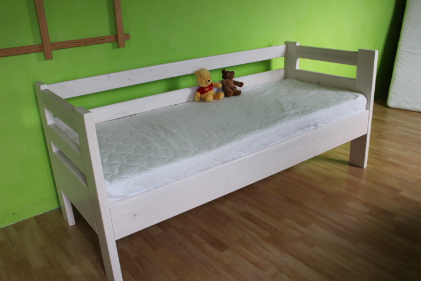
Jednolůžko EVA s ohrádkou
Jednolůžko z masivního smrku v provedení moření bílá lazura, kdy prosvítají leta smrku.
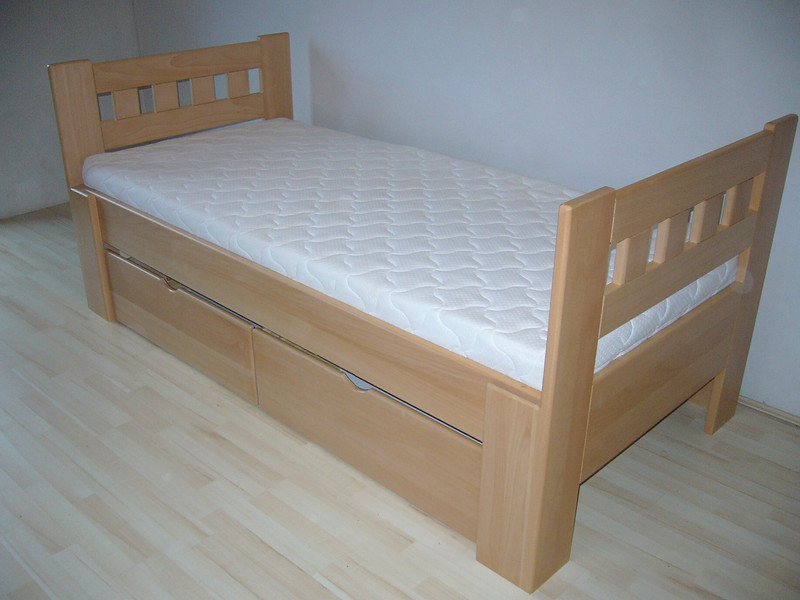
Bukové jednolůžko Luxi Double
Luxusní bukové jednolůžko s čely okýnka.
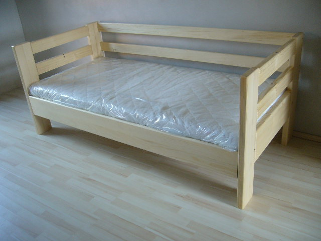
Robustní vysocezátěžové jednolůžko s ohrádkou EVA
Jednolůžko z masivní borovice nebo smrku s vysokou nosností až 400kg a tloušťkou materiálu 42mm.
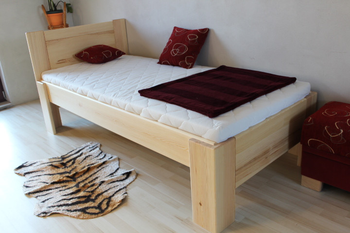
Jednolůžko Petra
Materiál: smrk nebo borovice, tloušťka desek 28mm rozměry: 90x200cm nebo 80x200cm, výška ložné plochy 55cm.
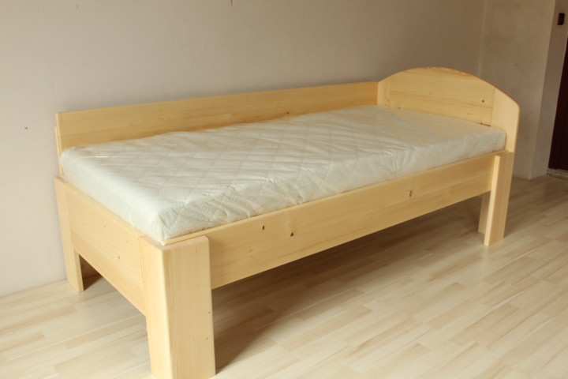
Jednolůžko Richard
Jednolůžko z masivního přírodního smrku nebo borovice, rozměry na matraci 90x200 cm, výška ložné plochy 55cm.
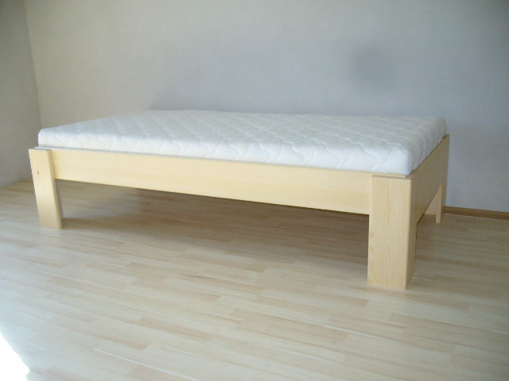
Jednolůžko Dita
Jednolůžko s nízkými čely materiál: smrk nebo borovice - dle přání.
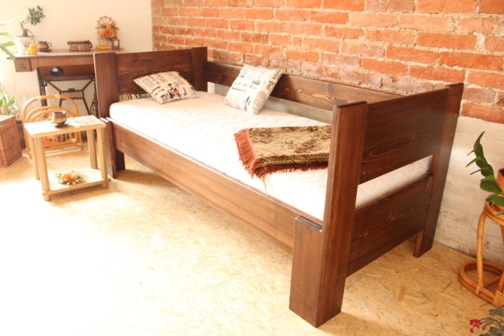
Jednolůžko Sandra
Materiál: smrk nebo borovice, tloušťka materiálu 28mm rozměry: 90x200cm nebo 80x200cm, výška ložné plochy 55cm.
Jak vybrat
Jak vybrat jednolůžko
Rozhoduje dřevina (smrk je nejlevnější, buk a dub nejtrvanlivější), výška ložné plochy a to, zda chcete úložný prostor. Poradíme telefonicky nebo na prodejně.
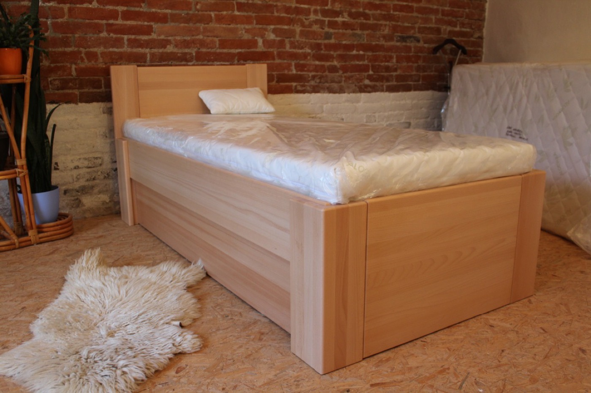
Podrobnosti a fotogalerie
Časté dotazy
Dá se jednolůžko vyrobit v jiném rozměru?
Ano, každý model vyrábíme i v jiném rozměru.
Je v ceně rošt a matrace?
Ne. Ceny jsou bez roštu a matrace, které můžete přiobjednat.
Chcete jiný rozměr nebo provedení?
Napište nebo zavolejte. Vyrobíme podle vašich rozměrů, nákresu nebo fotky.